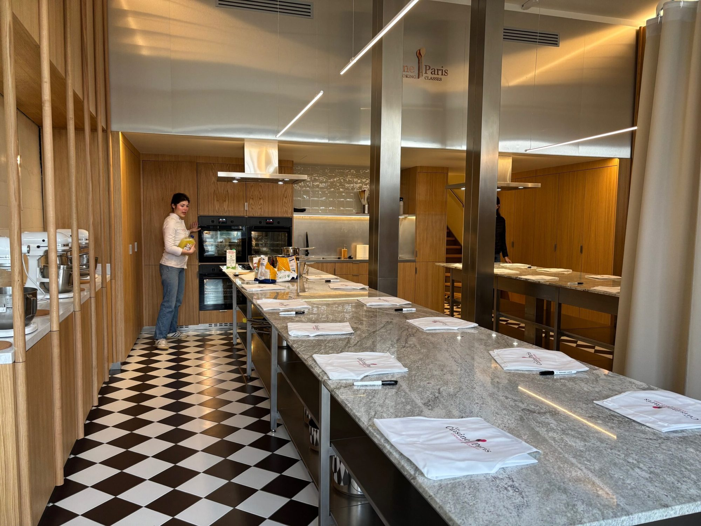
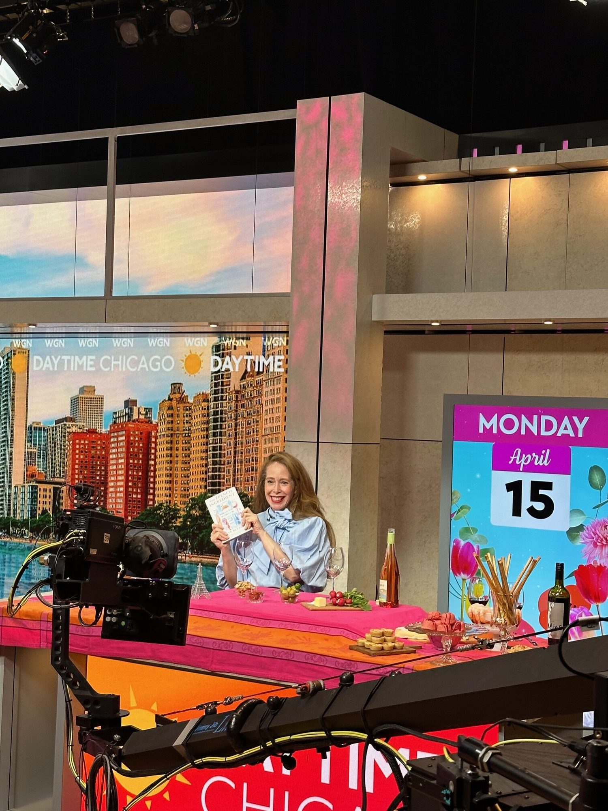
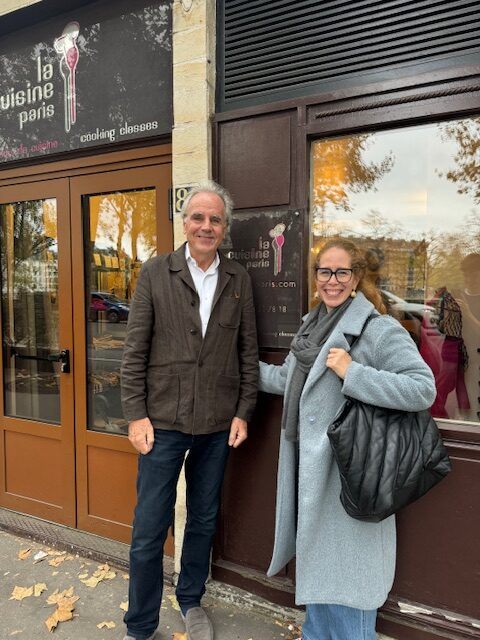

Jane Bertch, who was born and raised in Chicago, has done something most Francophile Americans only dream about. She’s living and working in Paris, running a successful business built from scratch, La Cuisine Paris, which is now the largest non-professional cooking school in France. Jane chronicles her journey from Chicago to Paris in a recent memoir, The French Ingredient, and shares entrepreneurial insights on her podcast, GenerateHer. I recently met with Jane to talk about her two decades of living and working in Paris and lessons she’s learned along the way.
Rob Murphy: You recently noted that you are nearing a milestone. Soon you will have lived more of your life outside the U.S. than within it. You’ve lived 25 years in Europe, 20 of them in France. As a child growing up in Chicago, would you have ever imagined this life?
Jane Bertch: Not at all, not in the least. The matriarch of my family was my grandmother. She always wanted to keep the family close. So, the thought of moving out of the city, let alone the country, were the furthest from my mind.

Rob Murphy: Can you describe growing up in Chicago? I know you were raised in a close-knit extended family, as you mentioned. What was your childhood like? Where did you grow up?
Jane Bertch: I split my life in two places at a very young age because of my grandmother, who was so very hands-on with our family. I spent a lot of my time in Joliet, at my grandmother’s house, and the rest of the time in Hyde Park, Chicago, with my mother. For a good part of my childhood, my grandmother raised me. I am still the only child in the family, so you can imagine I got all of the attention, wanted or not.
Rob Murphy: Where did you go to school?
Jane Bertch: Culver Academy.
Rob Murphy: The military school in Indiana? How does a young woman from Hyde Park end up at Culver Academy?
Jane Bertch: Okay, this is going to sound ridiculous, but it’s honest to God’s truth. I loved the TV show, The Facts of Life, with Jo, Blair and Trudy. The show was about their life at a boarding school. Do you remember this show?
Rob Murphy: Vaguely, yes.
Jane Bertch: As an only child, having friends around was so important. I just fantasized about that type of boarding school experience, and so we started looking into it. Culver was the closest, most well-established place, and that’s how I ended up there.
Rob Murphy: Amazing! I understand you also worked at the Museum of Science and Industry as a teenager. Can you tell us a little bit about that?
Jane Bertch: I loved this museum growing up. It was magical and still is. This museum is a warehouse of dreams and ideas. I desperately wanted to have a job that was very important to me at a young age. The museum was right across the street from my house, and I was fortunate to get a job in the gift shop, where I worked until leaving Chicago. It was a wonderful experience working there and taught me about responsibility and customer service in an environment that is thrilling! It also provided me with the opportunity to meet international people all the time. I am so grateful having had that experience at such a young age.
Rob Murphy: During college at Boston University, I worked at the Boston Museum of Science. Same sort of deal you had in a very magical place, except that I worked guarding the Greenland Exhibit, never thinking it would such a hot topic like it is today! After high school, you experienced France for the first time on a trip with your mother, but I understand this trip did not endear you to Paris.
Jane Bertch: That was a very troubling trip for me. My first impression of Paris was quite negative. I felt so out of place. As you know, teenagers are very sensitive about fitting in and Paris, in those days, had a real knack for making you feel like “the vulgar tourist.” Even when you are doing the simplest of things like trying to speak a basic French word and you pronounce it horribly, the French would look you and either correct your pronunciation or ignore you completely. That first visit didn’t leave me feeling in love with Paris at all. What an irony ending up there!
Rob Murphy: You stayed in Illinois for college and received a B.A. in English and then a master’s degree in Labor and Industrial Relations from the University of Illinois, Urbana-Champaign, following which you entered the world of banking. At the age of 24, your company offered you an opportunity to move to the United Kingdom, a life-changing move. What made you decide to take that role abroad?
Jane Bertch: It was just the thrill of it and felt it would be so easy because of the language. I had just graduated from college, and it seemed so exciting to have this opportunity to move abroad in a relatively safe container. The bank where I was working arranged all the logistics for this nine-month assignment including travel, housing, insurance and a working visa. It was a seamless, safe, and comfortable move, so I jumped on it.
Rob Murphy: How did it go when you got there?
Jane Bertch: The first shock, which was an unexpected surprise, was that even though we were speaking English, we were not always saying the same things or communicating that well. I learned to listen carefully because the context of what people are saying, not exactly the words, is what is the most important. I saw and learned many things in London. For example, when somebody says, “that’s quite nice” in London, it usually means it is awful. Trying to navigate that was a surprise, but it was a wonderful experience overall.
Rob Murphy: What did your friends and family back in Chicago think of you living in Europe?
Jane Bertch: Keep in mind, this was 25 years ago, and it was very much a novelty to live abroad. As a society now, we are much more well-traveled and going to London is not as special as it was back then. There was fear and trepidation around me being alone. These were also the days when a phone call was outrageously expensive, with everybody sitting around the table waiting for you to call and quickly passing the phone around so you could say hello and then hang up. My family was very happy for me, but nervous as all families would be when their only child goes abroad.
Rob Murphy: Nine months in London turned into five years! Then you were offered a more prestigious job with your company in Paris. Could you describe the move to Paris?
Jane Bertch: In London, my initial job involved an internal client-facing role, however, I was very fascinated with an external client-facing role. I just loved the thought of being a client-oriented banker. There was a senior leader at the bank who pulled me aside and said, “You know what, I see this in you, and there is an opportunity in Paris that you may wish to pursue.” I am so grateful for this advice, because it changed my career trajectory because of something in me I hadn’t even seen myself. I remind myself now, as somebody who’s a bit more seasoned, to take time to share with others the little bright sparks that appear along the career pathway. While based in London, I had only gone to Paris for a few weekend recreational trips, until finally, this job opportunity ultimately brought me here. I was quickly introduced to a very difficult manager –and I say that with such fondness now– because he taught me so much, as the French do, about being very thoughtful about the work you are producing. The French are meticulous. This early experience really changed me.
Rob Murphy: I had similar experiences when I came to live in Paris full-time in 2007. One of the first things I noted was there were so many meetings, and every meeting lasted an hour or longer. We sometimes had 60-90 minute meetings scheduled to start at 6:00 pm. On the other hand, we never started before 9:00 am. When I first started, I would arrive at 7:30 – 8:00 am just like a good American academic doctor. Nobody would be there, and I would trip the alarm. After three days of this, they just told me stop coming in so early, please!
Jane Bertch: Yes, and they love to talk. I mean, they use emails when really necessary but they usually recapped a discussion you previously had, or they would pick up the phone and actually make a real phone call. I’d think, “Oh my gosh I haven’t touched a phone for ten years!” A very different style in getting things done.
Rob Murphy: During those early days in Paris, was there ever a time you got frustrated or tired and just wanted to pack it up and go back home to Chicago?
Jane Bertch: Oh my gosh, so many times. But you know what, that’s a personal challenge we all have. Sometimes, we just want to pack it up and not get out of bed in the morning. I was overwhelmed and surprised by the level of expertise in France that people have in their subjects. This is certainly a result of their educational system. Trying to tell them about my liberal arts background, it was very difficult for them to get their hands around. That was overwhelming. So many times, I felt out of my league.
Rob Murphy: Yes, I know. On the professional side, in France you do not start off your post-high school education by going first to a four-year college or university. In France, and many other countries, you go right into medical, dental or engineering school or whatever professional school and you stay on that track. Despite diving right into your professional training, their liberal arts knowledge is really high and so cultured. I felt like such a bumpkin when I first arrived because they go to every opening at every museum and every ballet and every opera. They go to every movie, too! They know more about American movies than I do.
Jane Bertch: Yes, they do. It’s such a unique balance of professional expertise -we know that France loves experts- and then on the other side, this complete understanding of arts and culture. I felt totally like the odd man out.

Rob Murphy: I understand that after the passing of your grandmother and a very close friend, you started on a new path to reshape your life. This is when the idea for your business, which is called “La Cuisine Paris”, began to take shape. Tell me about this time.
Jane Bertch: I am going to admit, this period ended up being lucky for me. There is a beautiful quote from Seneca, the Roman philosopher, “Luck is preparation meets opportunity.” Sometimes it takes a difficult situation to reassess life. During this short period of time, I lost a few people very close to me which led to me reassessing my own life, “What am I doing and why am I doing it? Where and what do I want to be?” I’ll be frank, this was quite scary. Up until then, I had spent my whole career scratching and clawing to get where I was and then all of a sudden to look around and say, “What am I doing here? Do I belong?” It really left me with a lot of questions. I think sometimes in those dark moments, if you can pause and let yourself daydream and imagine, it’s so important. During that daydream, with friends at a New Year’s Eve party, we started to play around with the idea of: what were other things we could do with our lives? The idea of a cooking school came out of my mouth. We all looked at each other and then went on. Lo and behold, that little idea started to haunt me, and I thought, “Well, let me look into it.”
Rob Murphy: You must love cooking.
Jane Bertch: It may be surprising, but no, I am not a cook. I realized, however, what I wanted was to create a safe space where people could come together under a shared experience. All I needed was to find the right people to deliver that experience, which included making croissants, macarons, sauces, and classic French dishes, and taking trips to the French markets which is whole experience unto itself. The added novelty was that this would be a business that does French cooking classes in English, in Paris!

Rob Murphy: Becoming an entrepreneur anywhere is difficult, but to do it as an American in Paris must have included some very unique challenges. Can you share some of the highs and lows of your very successful journey?
Jane Bertch: Let me start with the lows, because they are often the double side of one coin. The looks of confusion and dismay I would get with French people – in the land of gastronomy with no cuisine background, no business experience – saying that I’m going to start a cooking school, that left a few people confused and perhaps concerned. Business must evolve to what clients want and it took a while for me to figure out what clients want. Luckily, I listened. I would say a “low” that I now manage successfully is, when you feel out of your depth and you know you do not have all of the experience, you are at risk to tailspin downwards into questioning yourself and not taking action and not moving forward. I finally decided, well, if I continue to do that in this business, it’s dead because I will never give a cooking class, which is the nature of our business. I tried to flip that low into the high of being proud of the difference and what I bring to the team. This is the power of diversity, of having a team that has different experiences and different foci. That has meant meeting some extraordinary artisans and really coming to appreciate the love that French people have for their products and the respect they have for a piece of bread, for example. To me it was just food, but here in France, good bread is spiritual.
Rob Murphy: When I am in Paris, I buy my baguette just before dinner at Liberté, this great place across the street from me on rue Saint Dominique, and it is a spiritual experience. The “traditional baguette” is made from wheat flour, water, yeast and salt. They can’t be frozen or have any preservatives added to them. They often are bought warm, right out of the oven at the bakery. It’s so good, sometimes I eat it on the way home! There is nothing like it elsewhere. It doesn’t exist in Chicago.
Jane Bertch: The respect for artisans here is quite extraordinary! Let me add that to the “high” of my journey. Breaking into French culture can be a long process. I don’t want to say hard, it’s just long, but when you do, the level of commitment, friendship, brotherhood, sisterhood, is beyond what I have ever experienced.
Rob Murphy: Absolutely, I agree one hundred percent. Each time I go to Paris, which is six to seven times per year, I hang out with my French friends and it is as if I had never left. Through your book, which I encourage everyone to read, you offer French astuce, or tips for your readers. What are some of the most important things you think Americans visiting France should know about French culture?
Jane Bertch: The most important thing they should know is that the French have gotten an unfair reputation of being rude, which is absolutely not the case. There could be a language barrier, so it may be challenging to communicate, and that means some conversations may be short and brusk. Also, if you’re not in their circle of influence, it’s not meant to be mean, but you don’t exist to them. Some people may interpret that as French people being aloof, cold, or rude, but they’re absolutely not, they just do not know you yet. You can see that at the market. When people know their vendors, and you do not mind waiting ten minutes in line because there are pleasantries being exchanged. So, I think that’s something people need to understand. It’s just a very different and polite culture. When you enter into these small shops, they are very much extensions of their homes. You would not enter somebody’s home and not greet them. It’s the same here. You should greet them when you walk in and say “Bonjour, madame or bonjour, monsieur!” It’s little things like that that I think sometimes we misinterpret.

Rob Murphy: And don’t forget, when you leave, say “Au revoir, bonne journée madame/monsieur” (Goodbye, have a good day/evening). Can you tell me a little bit about your customers at La Cuisine Paris? Who are they? Are there any French people or are they all tourists?
Jane Bertch: I can tell you it changes during the course of a year. Because we are a business that does French cooking classes in English, we have a very big visitor market with many people from North America. We also get lots of people from Australia and Asia, but they all tend to be visiting the city for one reason or another. On weekends and during the winter, we tend to get locals who are international or French that want to take our type of class. Of course, if they’re French, they speak a certain level of English. You will not find the French cooking schools doing what we do because nobody wants to do it. They want to learn Thai or Vietnamese food. They do not want to learn how to make a croissant, primarily because they know it will be horrible compared to what they can get at a bakery. Our key market is people who are visiting and local expats who are novice cooks. Although we occasionally have chefs join us because they respect seeing another person practice their trade.
Rob Murphy: Tell us about the location of your school. The building has somewhat of a history.
Jane Bertch: It was one of the first gay nightclubs in Paris! How fabulous. I figured it’s got positive energy. It was certainly a transformation to say the least, from a nightclub and now it is a building with kitchens.
Rob Murphy: And I hear you are undergoing an expansion.
Jane Bertch: Yes, it’s all done. We were able to finally secure the property next to us, which has more than doubled the number of our kitchens; we now have seven. If we are running full capacity, we can host up to 140 people per day. It has changed our business. It’s going to be a military logistics organization from here on out, trying to make sure that we know which kitchen is doing what, which chef is where, but it’s exciting and very rare to have the opportunity to expand to the place right next door.
Rob Murphy: What’s your most popular class?
Jane Bertch: Croissants. I don’t even have to think twice. Most people want to know how to make a great croissant.
Rob Murphy: Really? I would imagine that’s because when they go home, they can’t find a good croissant. I’m with the French on this one, and prefer to head across the street to Liberté. I’ll never make one that good in my life, plus I am more a pain au chocolat guy.
Jane Bertch: Yes. The only thing that rivals learning how to make a croissant is a visit to the French market in summertime. It’s an unforgettable experience that just doesn’t exist in the United States.
Rob Murphy: Final question which I ask to all my guests…Paris is the most visited city in the world. What are the top three things that you recommend that an American coming to Paris for a few days or a week should do?
Jane Bertch: Let me start with visiting a French market. I think that gives you such a good sense of the community. They’re neighborhood-based. You will hear how people interact. You will see the vibrancy of these communities – the markets are really the heartbeat of these communities. When you go, however, do not touch the fruit at the market! Let the vendors advise you unless you want to have a lashing right there! If you want a bag of peaches, the vendor should be asking you, “What are you going to do with them and when? Are you going to eat it now? Are you going to cook with it?” Next, I would say, find a café or bistro with an outside terrace, sit there with a glass of wine and enjoy watching the world go by. Paris has an unlimited amount of eye candy. You will also hear conversations around you, as the tables are typically very close to each other. You will get an appreciation and respect for time. Time is so significant in France and spending it and cherishing it is super important. Number three, pick a museum. Right now, my choice is Musée Carnavalet, which covers the history of Paris from pre-historic time to the 21st century. Definitely, one of the best free things to do in Paris. It’s in the heart of the Marais. The museum is large, with over 140 rooms. You’ll see beautiful masterpieces of the city long before there was photography. It will take you through the journey of Paris from its founding in the 3rd century BC by the Celtic Parisii tribe, following by the Roman settlement of Lutetia and the evolution to the City of Paris of today.
Rob Murphy: Musée Carnavalet? That’s one of the 136 Paris museums I have not visited! The more I learn about Paris, the more I realize I don’t know.
Jane Bertch: Same, Rob, the same!
Rob Murphy: Thank you very much for joining me today. I look forward to visiting La Cuisine Paris soon! I want to take the sauce class! And I recommend everyone to read your memoir, too, The French Ingredient.
Jane Bertch: Thank you, Rob!
Dr. Rob Murphy is Professor and Executive Director of the Harvey Institute for Global Health at Northwestern University; he is a physician at Northwestern Medicine. You may have seen him on WGN-TV morning news in recent years, where he gave daily updates on COVID-19 during the height of the pandemic. While he calls Chicago home, Rob also spends time in Paris, where he has lived on and off for the past 20 years including full time as visiting professor at the Pierre et Marie Curie University. He has met many other Chicagoans who are living and working in the city. Rob will introduce us to some of these Chicagoans in Paris who are embracing a new culture and lifestyle in the City of Lights.